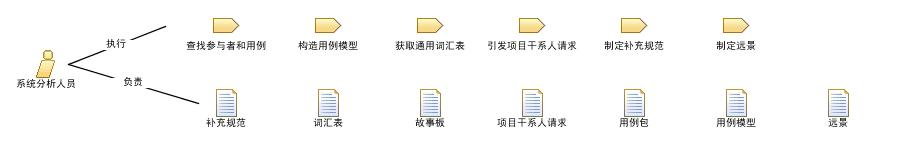

充当该角色的人首先在确定和了解问题和机会方面必须是一个专家。这包括表明与要解决的关键问题或要实现的机会相关联的需要的能力。
除此之外，担当此角色的人还必须具有出色的协调能力和非凡的沟通能力。 对于那些担当此角色的人来说，业务领域和技术领域的知识是有用的附加技能。 但是，如果个人能够快速吸收和理解新信息，这些技能可能就不那么重要了。 作为项目团队中的核心角色，扮演该角色的人必须能与其他团队成员有效协作。
可以通过以下方法分配该角色：
© Copyright IBM Corp. 1987, 2006. All Rights Reserved.